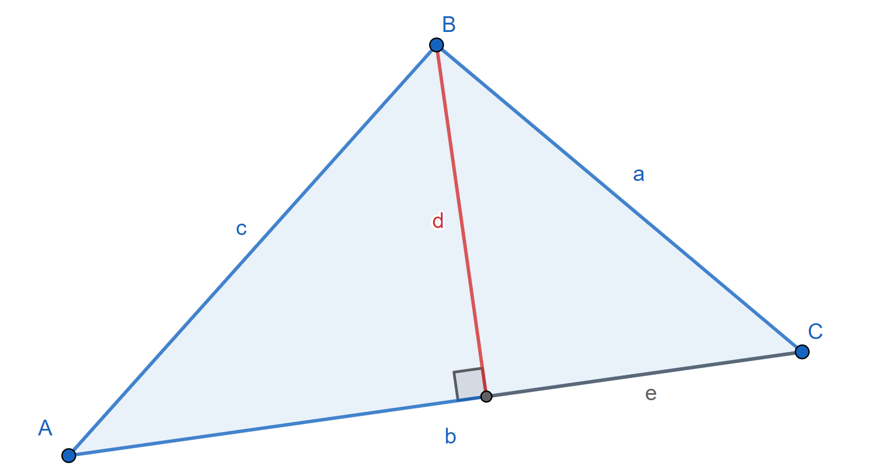
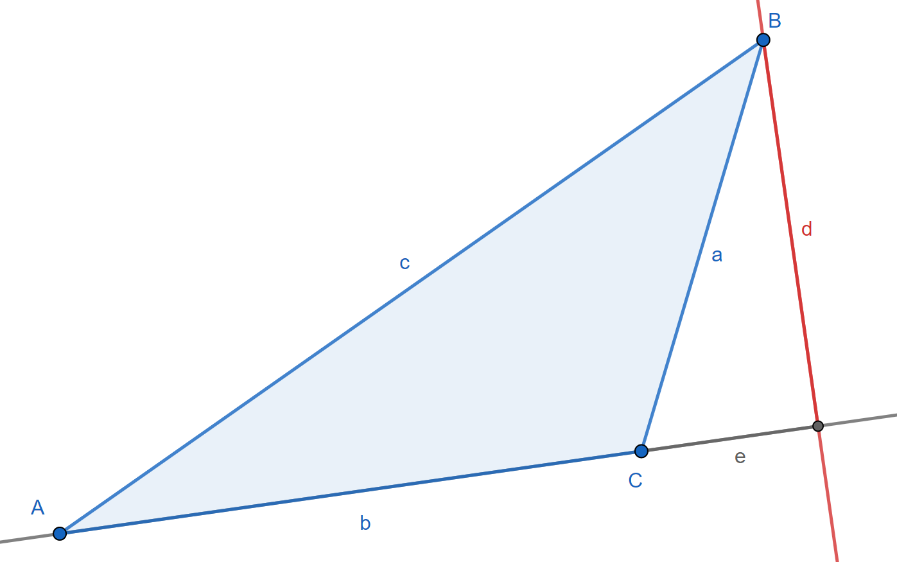

Law of Cosines

The law of cosines is a generalized extension of the Pythagorean theorem, and it is commonly used for finding an angle from three side measures.
TODO: Link Pythagorean theorem above and identity below
To derive the formula, construct an altitude of the triangle, as above, and observe the following:
`\displaystyle c^2=(\overbrace{a\sin C}^d)^2+(b-\overbrace{a\cos C}^e)^2`
Simplify and apply the Pythagorean identity:
`c^2=a^2\sin^2C+b^2-2ab\cos C+a^2\cos^2C`
`\implies c^2=a^2(\sin^2C+\cos^2C)+b^2-2ab\cos C`
`\implies \boxed{c^2=a^2+b^2-2ab\cos C}`
As seen below, this applies even for obtuse angles, keeping in mind that `\sin(\pi-\theta) = \sin\theta` and `\cos(\pi-\theta) = -\cos\theta` for all angles `\theta`.
